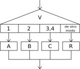

Selecci?n M?ltiple

La secuencia de instrucciones ejecutada por una instrucci?n Segun depende del valor de una variable num?rica.
Segun <variable> Hacer
<n?mero1>: <instrucciones>
<n?mero2>,<n?mero3>: <instrucciones>
<...>
De Otro Modo: <instrucciones>
FinSegun
Esta instrucci?n permite ejecutar opcionalmente varias acciones posibles, dependiendo del valor almacenado en una variable de tipo num?rico. Al ejecutarse, se eval?a el contenido de la variable y se ejecuta la secuencia de instrucciones asociada con dicho valor.
Cada opci?n est? formada por uno o m?s n?meros separados por comas, dos puntos y una secuencia de instrucciones. Si una opci?n incluye varios n?meros, la secuencia de instrucciones asociada se debe ejecutar cuando el valor de la variable es uno de esos n?meros.
Opcionalmente, se puede agregar una opci?n final, denominada De Otro Modo, cuya secuencia de instrucciones asociada se ejecutar? s?lo si el valor almacenado en la variable no coincide con ninguna de las opciones anteriores.
El ejemplo Men? muestra un programa muy simple que utiliza esta estructura de control para elegir que salida mostrar en pantalla de acuerdo a qu? opci?n el usuario selecciona mediante un men?.